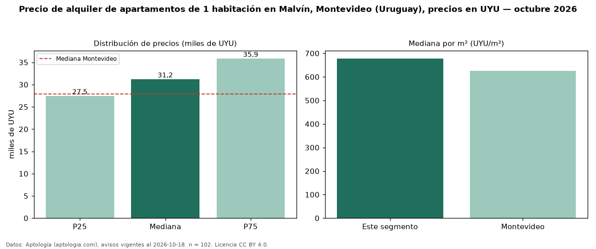

Precio de alquiler de apartamentos de 1 habitación en Malvín, Montevideo (Uruguay), precios en UYU — octubre 2026
UYU 31.250 al mes es el canon mediano de apartamentos de 1 habitación en alquiler en Malvín, Montevideo (Uruguay) (n = 102 avisos). Frente a la mediana de Montevideo para apartamentos de 1 habitación (UYU 27.900), queda 12 % por encima. Por metro cuadrado, la mediana es UYU 678/m² al mes (n = 98 avisos con área), 9 % por encima de Montevideo (UYU 625/m²). Son 59 % de los 172 avisos de apartamentos en alquiler de la zona, cuya mediana general es UYU 35.250 (−11 %). El área mediana anunciada es 45 m². La cuota de mantenimiento o condominio mediana declarada es UYU 5.500 al mes (n = 87), aparte del canon. La mitad central de los avisos va de UYU 27.500 a UYU 35.875 (razón 1,3), una dispersión baja. Datos: Aptología (aptologia.com), CC BY 4.0 — https://www.aptologia.com/uy/alquiler/montevideo/malvin. Archivos: PDF, CSV con las cifras y gráfica PNG.

| Avisos únicos | 102 |
|---|---|
| Percentil 25 | COP 27.500 |
| Mediana | COP 31.250 |
| Percentil 75 | COP 35.875 |
| Mediana por m² | COP 678 |
Fuente: avisos vigentes de portales inmobiliarios recopilados por Aptología, deduplicados (mínimo 30 avisos únicos por celda). Precios pedidos, no cerrados. Fecha: 2026-10-18.